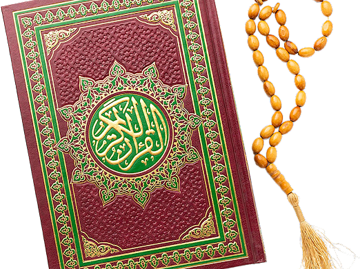

Assalamu Alaikum
Wishing you happy
Eid Ul Fitr
Eid al-Fitr is one of two major holidays celebrated by Muslims and commemorates the end of the holy month of Ramadan, in which Muslims fast daily from before dawn until sunset.It is commemorated by a large, community-wide prayer service in the morning, followed by meals and conversation with friends and family.